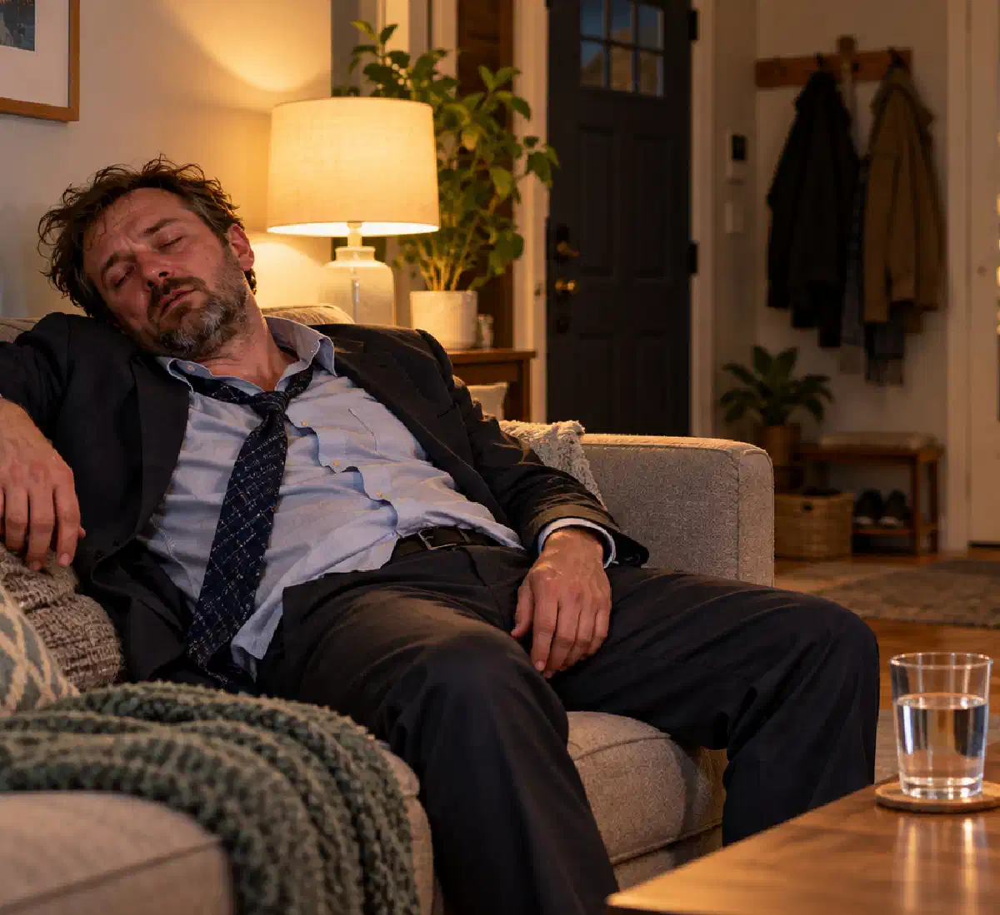

+38(068)
79 72 782
+38(068)
79 72 782Муж пришёл домой пьяным: что делать жене и как себя вести
Советы врача нарколога


Бесплатная консультация, работаем круглосуточно 24/7
Советы врача нарколога

Дата написания: 12 окт. 2026 г.
Последнее обновление: 12 окт. 2026 г.
Если муж пришёл домой пьяным, важно правильно оценить его состояние, избежать конфликта и при необходимости оказать первую помощь. Сильное алкогольное опьянение может сопровождаться нарушением координации, рвотой, выраженной сонливостью, агрессивным поведением и даже потерей сознания. В подобных ситуациях жене необходимо прежде всего позаботиться о собственной безопасности, а затем определить, требуется ли супругу медицинская помощь. Что делать, если муж сильно напился? Не стоит начинать выяснение отношений, обвинять его или пытаться заставить немедленно протрезветь. Лучше сохранять спокойствие, контролировать опасные симптомы и не оставлять человека без помощи при признаках тяжёлого отравления. Если употребление алкоголя становится регулярным, рекомендуется обратиться к наркологу для оценки возможной зависимости и выбора дальнейшего лечения.
Если муж пришёл домой сильно пьяным, сначала необходимо оценить его состояние и убедиться, что ситуация безопасна для окружающих. Не следует сразу устраивать разговор о причинах употребления алкоголя, поскольку в состоянии опьянения человек может неправильно воспринимать слова и эмоционально реагировать на замечания. Если муж находится в сознании, нормально дышит и способен самостоятельно передвигаться, предложите ему отдохнуть в безопасном месте. Важно обратить внимание на выраженность опьянения, наличие рвоты, нарушение координации и способность отвечать на простые вопросы. При ухудшении состояния может потребоваться наркологическая помощь на дому или экстренная госпитализация. Если муж ведёт себя агрессивно, безопасность жены и детей должна оставаться главным приоритетом.
Как вести себя с пьяным мужем, зависит от его состояния и поведения. Если супруг спокоен, рекомендуется разговаривать короткими фразами, избегать обвинений и отложить серьёзные обсуждения до полного протрезвления. Не нужно пытаться переубедить человека, который находится в выраженном алкогольном опьянении. Если муж раздражён, повышает голос или провоцирует конфликт, лучше соблюдать дистанцию и не вступать в спор. Не следует пытаться физически удерживать его или отбирать алкоголь, если это может вызвать агрессию. При угрозах и насилии необходимо перейти в безопасное место и обратиться за помощью. Разговор о проблеме употребления спиртного лучше проводить позднее, когда супруг сможет осознанно воспринимать информацию.
После возвращения мужа домой необходимо определить, насколько выражено алкогольное опьянение. Обратите внимание на сознание, дыхание, речь, координацию движений и способность отвечать на вопросы. При относительно лёгком опьянении человек обычно сохраняет ориентацию и может поддерживать разговор, хотя его реакции становятся замедленными. Признаки тяжёлого алкогольного опьянения включают выраженную сонливость, спутанность сознания, невозможность самостоятельно стоять, повторную рвоту и нерегулярное дыхание. Особенно опасно, если человек перестаёт реагировать на обращение или его трудно разбудить. В таком состоянии необходимо немедленно вызвать скорую помощь. Даже если муж выглядит просто уснувшим, важно убедиться, что он нормально дышит и реагирует на внешние раздражители.
Алкогольное отравление может проявляться выраженной слабостью, тошнотой, многократной рвотой, нарушением координации, спутанностью сознания и сильной сонливостью. При тяжёлой интоксикации возможно снижение температуры тела, нарушение дыхания, судороги и потеря сознания. Особую опасность представляет сочетание алкоголя со снотворными, транквилизаторами, опиоидами и другими веществами, угнетающими центральную нервную систему. Если муж употреблял неизвестные препараты или наркотики, риск осложнений значительно возрастает. При появлении опасных симптомов не следует пытаться самостоятельно провести снятие алкогольной интоксикации — необходимо вызвать экстренную медицинскую помощь.
Скорая помощь при алкогольном отравлении необходима, если муж потерял сознание, перестал нормально реагировать на обращение, редко или нерегулярно дышит, испытывает судороги или сильную боль в груди. Поводом для немедленного обращения также являются тяжёлая спутанность сознания, повторная рвота с нарушением сознания и признаки возможной травмы головы. В Украине вызвать скорую помощь можно по номеру 103 или 112. До приезда медиков необходимо следовать указаниям диспетчера. Если человек без сознания, но нормально дышит, его следует уложить на бок. При отсутствии нормального дыхания необходимо начинать сердечно-лёгочную реанимацию по инструкции диспетчера. Нельзя пытаться насильно поить человека, вызывать рвоту или оставлять его одного.
Помощь пьяному мужу в домашних условиях допустима при относительно стабильном состоянии, если человек находится в сознании, нормально дышит и способен безопасно глотать. Желательно обеспечить спокойную обстановку, исключить физические нагрузки и не допускать дальнейшего употребления алкоголя. Если муж полностью бодрствует, можно предложить небольшое количество воды. Не следует заставлять его пить или есть, особенно при выраженной сонливости и тошноте. Важно наблюдать за состоянием, поскольку действие алкоголя может усиливаться некоторое время после последней выпитой дозы. При ухудшении самочувствия требуется медицинская помощь. Домашние методы не заменяют лечение тяжёлого алкогольного отравления.
Если муж сильно напился и уснул, необходимо убедиться, что его дыхание ровное, а сознание не угнетено. Попробуйте осторожно обратиться к нему и проверить реакцию. Если человек не просыпается, реагирует необычно слабо или дышит нерегулярно, необходимо немедленно вызвать скорую помощь. Сильно пьяного человека нельзя оставлять спать на спине при риске рвоты. Если он без сознания, но нормально дышит, его следует осторожно повернуть на бок и наблюдать за дыханием до прибытия медиков. Не следует считать продолжительный глубокий сон обязательным признаком безопасного протрезвления. При тяжёлом опьянении сохраняется риск аспирации рвотных масс и угнетения дыхания.
Рвота после употребления алкоголя может возникать вследствие раздражения желудка, интоксикации и других нарушений. Если муж находится в сознании, важно помочь ему принять безопасное положение и исключить риск захлёбывания рвотными массами. Не следует заставлять человека есть или принимать лекарства без консультации врача. Многократная рвота может приводить к обезвоживанию и электролитным нарушениям. Если человек не может удерживать жидкость, испытывает сильную слабость или становится сонливым и спутанным, необходима срочная медицинская оценка. При нарушении сознания следует вызвать скорую помощь. В отдельных случаях после обследования может потребоваться капельница от алкоголя, но её необходимость определяет врач.
Потеря сознания после алкоголя является опасным состоянием, требующим немедленного вызова скорой помощи. Нельзя рассчитывать, что муж самостоятельно протрезвеет во сне. Алкоголь способен угнетать дыхательный центр, а рвота при отсутствии защитных рефлексов создаёт риск удушья. После вызова 103 или 112 необходимо проверить дыхание. Если человек нормально дышит, его укладывают в устойчивое боковое положение и продолжают наблюдение. При отсутствии нормального дыхания следует начать сердечно-лёгочную реанимацию. Запрещено давать воду, кофе, лекарства или пытаться вызвать рвоту. Любые действия необходимо согласовывать с указаниями диспетчера скорой помощи.
Если пьяный муж ведёт себя агрессивно, главная задача женщины — защитить себя и детей. Не следует спорить, отвечать угрозами, пытаться физически удерживать супруга или доказывать ему свою правоту. Алкоголь может усиливать импульсивность и снижать способность контролировать поведение, однако опьянение не оправдывает насилие. При угрозах желательно покинуть помещение, если это безопасно, и обратиться к близким или соседям. Если существует непосредственная опасность, необходимо звонить в полицию по номеру 102 или 112. Не следует оставаться рядом с агрессивным человеком только ради того, чтобы контролировать его алкогольное опьянение. Вопросы лечения зависимости можно обсуждать позднее, когда угроза устранена.
Разговор с пьяным мужем должен быть спокойным и кратким. В состоянии алкогольного опьянения человеку сложнее воспринимать аргументы, оценивать последствия своих поступков и контролировать эмоции. Поэтому обсуждение семейных проблем, финансовых вопросов и употребления алкоголя лучше перенести на следующий день. Не рекомендуется использовать унизительные выражения, угрозы или провокационные вопросы. Если муж повышает голос, лучше прекратить разговор и увеличить дистанцию. Когда супруг протрезвеет, можно спокойно объяснить, какие последствия его употребление имеет для семьи, и предложить обратиться за консультацией специалиста. При повторяющихся конфликтах полезна психологическая поддержка.
Если муж сильно напился, нельзя пытаться ускорить протрезвление холодным душем, принудительной физической активностью, крепким кофе или повторным употреблением алкоголя. Эти действия не ускоряют безопасное выведение этанола и могут ухудшить состояние. Также запрещено самостоятельно назначать снотворные, транквилизаторы, сильнодействующие обезболивающие и другие препараты, способные взаимодействовать с алкоголем. Не следует вызывать рвоту, заставлять сонливого человека пить воду или оставлять его одного при признаках тяжёлой интоксикации. При опасных симптомах необходима не домашняя процедура, а экстренная медицинская помощь.
Как быстро протрезветь после алкоголя — частый вопрос родственников, однако безопасного способа мгновенно вывести этанол из организма не существует. Скорость его переработки зависит от индивидуальных физиологических особенностей, количества выпитого и других факторов. Кофе, душ, прогулки и капельницы не обеспечивают быстрого устранения алкогольного опьянения. При стабильном состоянии рекомендуется прекратить употребление алкоголя, обеспечить спокойный отдых и наблюдать за самочувствием. Полностью бодрствующему человеку можно предложить воду. Если сохраняются выраженная слабость, многократная рвота или другие тревожные симптомы, следует обратиться к врачу. До полного восстановления нельзя садиться за руль или выполнять опасную работу.
Вызов нарколога на дом может потребоваться при выраженном ухудшении самочувствия после употребления алкоголя, признаках обезвоживания или подозрении на алкогольную абстиненцию. Врач уточняет продолжительность употребления, оценивает сознание, дыхание, артериальное давление, пульс и сопутствующие заболевания. При необходимости проводится дополнительное обследование. Наркологическая помощь на дому возможна только при отсутствии признаков тяжёлого отравления и других опасных осложнений. Специалист может назначить симптоматическое лечение и определить необходимость дальнейшего наблюдения. При судорогах, нарушении сознания, дыхания или других жизнеугрожающих симптомах необходимо сразу вызвать скорую помощь, не ожидая домашнего визита нарколога.
Капельница от алкоголя на дому может применяться при обезвоживании, повторной рвоте, невозможности восполнить жидкость обычным способом и отдельных электролитных нарушениях. Состав и объём инфузии определяет врач после обследования. При этом капельница не является универсальным методом протрезвления и не устраняет алкогольную зависимость. Если муж находится в тяжёлом алкогольном опьянении, имеет нарушения сознания или дыхания, домашняя инфузия не заменяет экстренную медицинскую помощь. При длительном употреблении алкоголя также важно оценить вероятность абстинентного синдрома. Детоксикация от алкоголя должна проводиться с учётом состояния пациента и медицинских показаний.
Если муж пьёт несколько дней подряд, важно оценить продолжительность употребления, количество алкоголя и наличие симптомов зависимости. Продолжительный запой может сопровождаться обезвоживанием, нарушениями сна, повышением давления и ухудшением общего состояния. После резкого прекращения употребления у человека с физической зависимостью возможно развитие опасного алкогольного абстинентного синдрома. Вывод из запоя на дому может рассматриваться только после врачебного осмотра и при отсутствии тяжёлых осложнений. Если наблюдаются судороги, галлюцинации, выраженная спутанность сознания или тяжёлое ухудшение состояния, необходима экстренная медицинская помощь. Самостоятельно давать мужу седативные препараты или пытаться лечить длительный запой неизвестными лекарствами опасно.
Алкогольная зависимость у мужа может проявляться регулярной потерей контроля над количеством выпитого, сильным желанием употреблять спиртное и продолжением употребления несмотря на семейные, профессиональные и медицинские проблемы. Дополнительными признаками являются повторные запои, попытки скрывать употребление и появление симптомов отмены. Важно понимать, что единичный эпизод сильного опьянения не обязательно свидетельствует об алкоголизме. Однако повторяющиеся случаи требуют внимания. Консультация нарколога помогает оценить характер употребления и определить необходимость лечения. При подтверждённой зависимости могут применяться медикаментозная терапия, психотерапия и программы психологической поддержки.
Если муж регулярно употребляет алкоголь и отказывается признавать проблему, разговор рекомендуется проводить в трезвом состоянии. Лучше избегать обвинений и угроз, объясняя конкретные последствия употребления для здоровья, отношений и семейной жизни. Важно говорить о собственных переживаниях и предлагать реальные варианты помощи. Лечение алкоголизма обычно требует добровольного участия пациента и его информированного согласия. Можно предложить начать с консультации нарколога без обязательного решения о длительном лечении. Если муж отказывается обращаться за помощью, жена может самостоятельно получить рекомендации психолога или нарколога по дальнейшим действиям. Насильственные попытки лечения вне предусмотренных законом оснований недопустимы.
Если употребление алкоголя сопровождается угрозами, физическим насилием или опасным поведением, безопасность семьи должна быть главным приоритетом. Желательно заранее определить место, куда можно обратиться за помощью, поддерживать связь с доверенными людьми и иметь возможность быстро покинуть опасную ситуацию. Агрессия пьяного мужа не должна восприниматься как неизбежная часть семейной жизни. При непосредственной угрозе необходимо вызвать полицию по номеру 102 или 112. В Украине также действует правительственная линия помощи пострадавшим от домашнего насилия 15-47. Дети не должны участвовать в конфликтах или пытаться успокаивать агрессивного взрослого. После обеспечения безопасности можно отдельно решать вопросы лечения алкогольной зависимости.
Как помочь мужу бросить пить — вопрос, который требует не только семейной поддержки, но и оценки возможной алкогольной зависимости. При регулярном употреблении рекомендуется консультация нарколога, который определит необходимость медицинского лечения, психотерапии и дальнейшего наблюдения. Профилактика повторных запоев может включать работу с психологической тягой, изменение привычек, лечение сопутствующих психических расстройств и поддержку семьи. При подтверждённой алкогольной зависимости по показаниям могут применяться препараты, снижающие вероятность возвращения к употреблению. Важно помнить, что жена не может самостоятельно контролировать решения мужа, но вправе устанавливать личные границы и заботиться о собственной безопасности.

Статья проверена экспертом
Робулец Ольга
Врач нарколог, ординатор
Возможно интересная статья:
Созависимость в деталях: почему жена алкоголика подсознательно не дает ему бросить пить

Да, мы строго соблюдаем полную конфиденциальность на всех этапах лечения. Информация о пациенте, диагнозе и прохождении терапии не передаётся третьим лицам. Обращение к нам не влечёт постановку на учёт. Вы можете быть уверены в безопасности и анонимности.
Программа лечения разрабатывается индивидуально после консультации со специалистом. Учитываются вид зависимости, её длительность, физическое и психологическое состояние пациента. Такой подход позволяет повысить эффективность терапии и снизить риск срыва. Мы не используем шаблонные решения.
Да, мы сопровождаем пациентов и после основного курса лечения. Проводятся консультации, рекомендации по адаптации и профилактике рецидивов. При необходимости возможна дальнейшая психологическая поддержка. Это помогает сохранить результат и вернуться к полноценной жизни.
Номер телефона:
+380 (68) 797 27 82
+380 (50) 021 69 57
Адрес наркологического центра вашего города уточняйте по
телефону
Работаем в: Киеве, Одессе, Львове, Харькове, Днепре,
Запорожье, Черкассах, Чугуеве, Черноморске, Каменском
Telegram: t.me/umbrellaplus
График работы: Круглосуточно